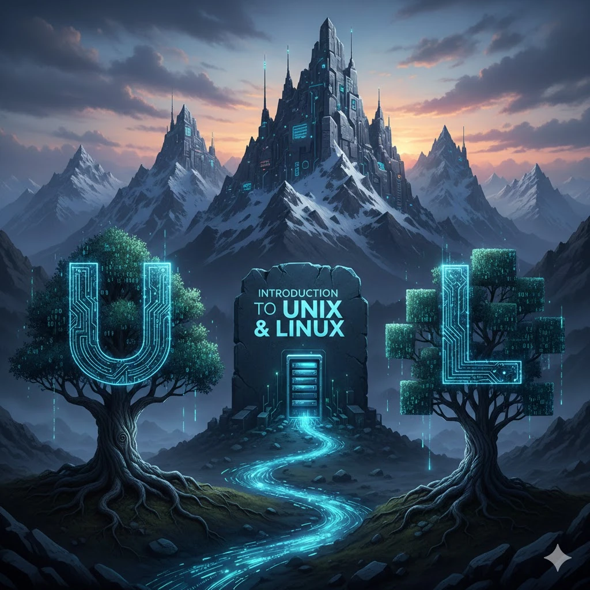
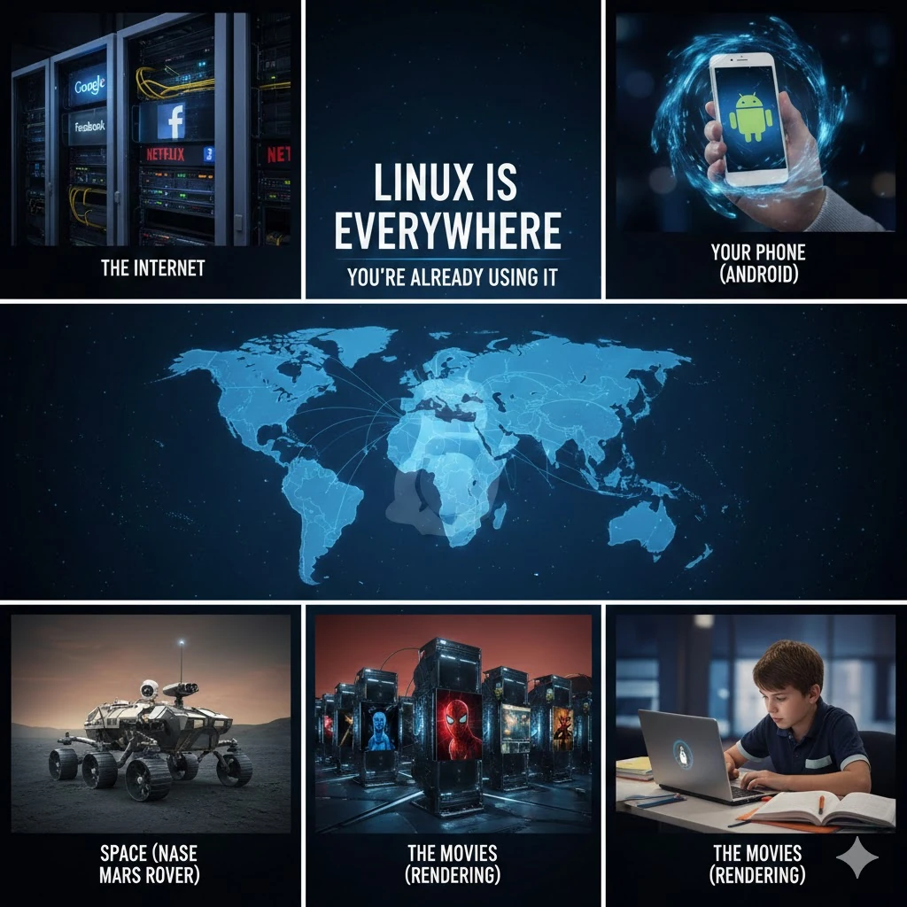
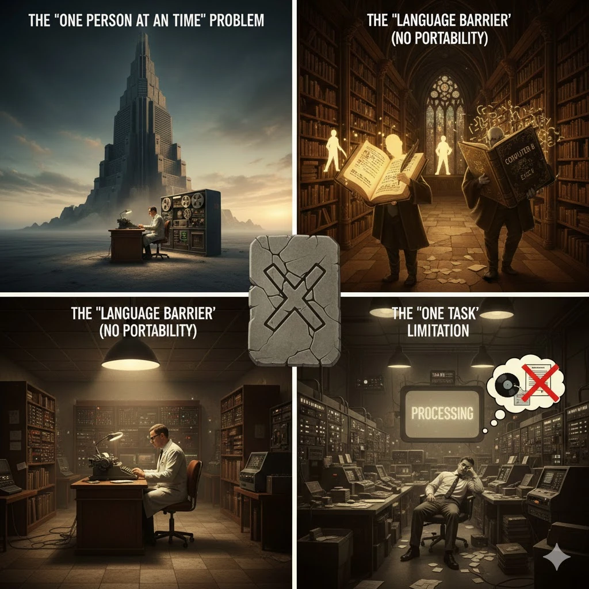
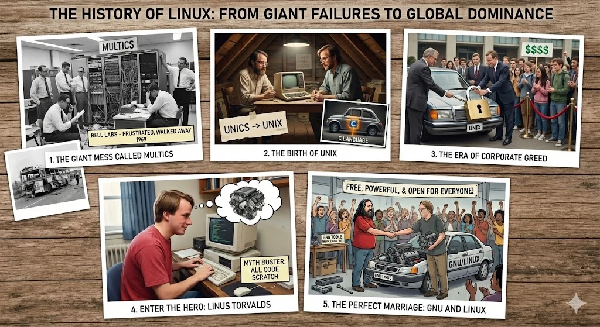
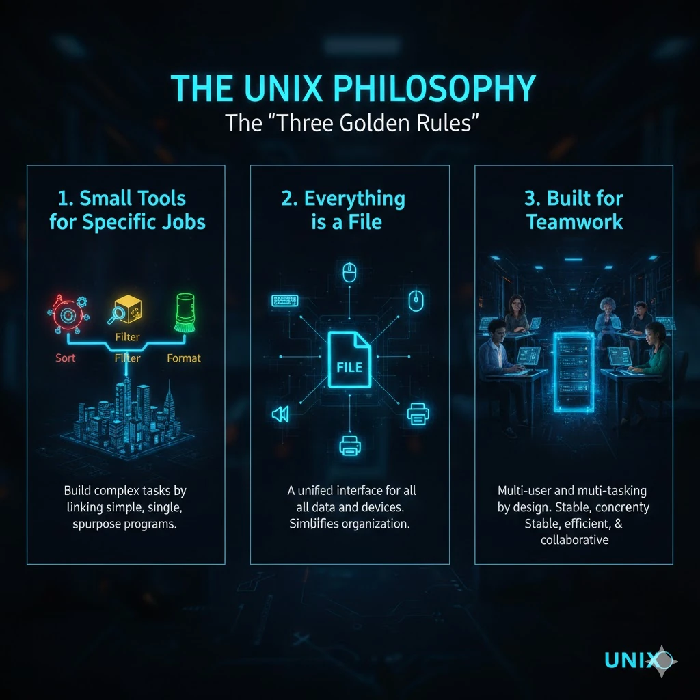

Introduction to UNIX & Linux
Where is Linux? (Spoiler: everywhere)

Most people think a computer is just a screen with some icons and a “Start” button. They believe the machine is in control and they are simply using what it allows. Linux is different: it isn’t just an operating system, it’s the “skeleton key” to the digital universe. And you already use it every single day:

The internet
Almost every website you visit (Google, Facebook, Netflix) runs on Linux servers.
Your phone
If you have an Android phone, you carry a Linux “heart” in your pocket.
The movies
Films like Avatar and Spider-Man were rendered on giant Linux render farms.
Space
NASA sent Linux to Mars (the Ingenuity helicopter). If it’s stable enough there, it’s stable enough for your homework.
The “dark ages” of computing
Before the technical details, let’s ask why Linux exists at all. This is the origin story of the modern digital world: geniuses, big failures, and a student who changed the world from his bedroom. It starts with three big headaches.

1 · One person at a time
Imagine a skyscraper with one chair and one desk. To work, you book the whole building, do your task, and leave before the next person enters. Early computers were single-user: room-sized, yet only one scientist could use them at a time.
2 · The language barrier
A program written for Computer A wouldn’t run on Computer B, like a book only one person can read. Software wasn’t portable, so engineers rewrote everything for every new machine.
3 · One task only
Computers couldn’t “walk and chew gum”. You gave one job, waited hours for it to finish, then started the next. There was no multitasking.
The history: from giant failures to global dominance

- 1The giant mess called Multics (mid-1960s)MIT, AT&T Bell Labs and General Electric tried to build a “super-brain” OS called Multics: one giant computer many people could use at once. It was too big, too complex and too expensive, and Bell Labs walked away in 1969. → a bus for the whole world, so heavy it couldn’t move
- 2The birth of UNIX: the attic project (1969)Ken Thompson and Dennis Ritchie, two people from that project, found an old discarded computer and built something simpler. They called it UNICS (Uniplexed Information and Computing Service), a pun on Multics; the name became UNIX. In 1973 they rewrote it in the C language, so it was no longer stuck on one machine and could be moved to almost any computer. → a small, fast car with a universal engine that drives on any road
- 3The era of corporate lock-in (1980s)UNIX became the system everyone wanted. Companies like IBM, HP and Sun Microsystems made their own versions, sold them at high prices and closed the source code. Students and hobbyists couldn’t afford them and weren’t allowed to study or modify the code. → a heavy lock on the hood, and a fortune just to sit in the driver’s seat
- 4The GNU Project (from 1983)Richard Stallman led the GNU Project to build a free UNIX-like system. His team built the essential tools: programs for typing commands, managing files, writing software and more. → the steering wheel, seats, brakes and lights, everything except the engine
- 5Enter the hero: Linus Torvalds (1991)A computer science student in Finland needed a UNIX-like system, but commercial UNIX was far too expensive. Instead of waiting, he started writing his own kernel from scratch in his dorm room, as a personal learning project. → the engine
- 6The perfect marriage: GNU + LinuxLinus’s Linux kernel combined with the GNU tools gave the world a complete operating system that was free, powerful, and open for everyone to study, modify and share. → a fully working car anyone can drive for free
What made UNIX special?
Most software tries to be a Swiss Army knife that does everything. UNIX took the opposite approach. It stays powerful by staying simple. That philosophy made it the grandparent of almost every modern system.

The three golden rules
Small tools, one job each
Many tiny tools, each a master of one simple task. To do something big, you link them together like a chain.
Everything is a file
A document is a file, but so are your keyboard, mouse and speakers. The system talks to everything in the same “language”, which keeps it organised.
Built for teamwork
Many people can use the same computer at once, running many programs at once, without the system crashing or getting confused.
Small tools chained together, the UNIX way. You’ll build chains like this in the pipes note.
The ancestor of our modern world
Even if you never see the name “UNIX” on your laptop or phone, its ideas live inside them:
| System | Relationship to UNIX |
|---|---|
| Linux | “UNIX-like”: built from scratch to behave like UNIX, without using the original code. |
| macOS | Certified UNIX, built on Darwin, a direct descendant of the UNIX family (BSD). |
| Android | Built on the Linux kernel. |
| iOS | Built on the same Darwin foundation as macOS. Both phones follow classic UNIX ideas for handling apps and security. |
Why the open-source philosophy was needed
To understand Linux you need the open-source mindset. It isn’t just about free of cost; it is about freedom.
The old way: closed and secret
You got only the finished program; the source code was hidden.
No control: you couldn’t change even small things.
Wait and pray: only the company could fix bugs, sometimes taking months.
Slow innovation: only a small team could see the code.
The new way: open source
The source code is open and readable, like a restaurant giving you the full recipe of its best dish. Anyone in the world can:
Study it · Modify it · Improve it · Share it
Why this changed the game
When software became open, it stopped belonging to one company and started belonging to the community.
| Benefit | What it means |
|---|---|
| Transparency | Anyone can read the code, so hidden secrets or spyware are much harder to sneak in. |
| Security and trust | Thousands of developers look at the code, so bugs and security holes are found and fixed quickly. |
| Community-driven | Instead of one company deciding, millions of users and developers build what they actually need. |
Why Linux was created
UNIX was the gold standard, but it was mostly proprietary: owned by a company that keeps the secrets to itself. Unless you worked for a big corporation or top university, you couldn’t use it. Linux was built to fill that gap with three goals:
Follow UNIX principles
Act like UNIX, with its smart organisation and multitasking, without using any of its restricted code.
Be open source
From day one, anyone can see the “recipe” of the system.
Run on common hardware
Most UNIX ran on expensive, specialised machines. Linux ran on the ordinary PC on your desk.
The “full package” equation
Linus didn’t build a whole car; he built the world’s best engine. To drive you to work, the engine needs a body, wheels and a steering wheel.
What exactly is Linux? The big clarification
People say “I use the Linux operating system”, but technically that isn’t 100% true. Linux is the kernel: the engine, not the whole car.
The Linux kernel = the engine
A massive, powerful engine that can run for years. But you can’t sit on an engine or steer it. On its own it is raw power on the garage floor.
The operating system = the full car
To drive to the shop, the engine needs a body, seats, a steering wheel and a dashboard.
So when people say “I use Linux”, they mean they drive a car with a Linux engine under the hood.
The kernel’s four jobs
The kernel is like a busy manager in a giant factory:
| Job | Factory picture | What it does |
|---|---|---|
| CPU | the super-brain | Every app wants the CPU at once. The kernel is the referee that decides how many milliseconds each one gets, so nothing freezes. |
| Memory | the workspace | Tracks every megabyte of RAM and stops your browser from wandering into your music player’s memory. |
| Devices | the hands | Translates between software and hardware. When you plug in a mouse or printer, the kernel knows how to talk to it. |
| Processes | the tasks | Starts, stops and watches over every running task so the system stays stable. |
Building the full car
The family tree: UNIX vs Linux
Side by side they speak the same language, use the same commands and follow the same rules. Look closer and their “lives” are very different.
| Aspect | UNIX | Linux |
|---|---|---|
| Origin | The parent. Born around 1970 in a high-tech lab (Bell Labs). The original genius that set the rules. | The inspired child. Born in 1991 in a student’s bedroom. Not built from UNIX code, but built to act like it: “UNIX-like”. |
| Ownership | A private club. Mostly proprietary; companies own it and you can’t see or change the source. | A public park. Open source; anyone can read the blueprints, find a mistake and fix it. |
| Development | Corporate. Built behind closed doors at companies like IBM or HP, who decide features and timing. | Global. Thousands of contributors, from a teenager in India to a professional in Germany. |
| Cost | A luxury. Usually expensive, with official support. Aimed at banks and research centres. | A gift. Mostly free: the same price as a glass of water. |
Why Linux rules the world
Look around a classroom and you see Windows and Macs. Look at the hidden world of servers powering Google, Netflix and Instagram, and Linux is everywhere. Four reasons:
1 · Stability
Laptops get laggy and need restarts. Linux servers routinely run for months or years without a reboot; restarts are mostly for kernel updates.
2 · Security: a thousand eyes
In closed systems only a small team sees the code. Open source means thousands of developers inspect the engine, so security holes are often fixed within days or even hours.
3 · Low resource use
Linux is lean: no wasted power on animations or background apps you don’t need. It can bring an old, slow computer back to life.
4 · Zero licensing
Install it on 10 or 10 million machines, free. Money goes to innovation instead of “permission” to use an OS.
The licence maths
Why so many “flavours” of Linux?
Different users, different needs
| User | What they want | Typical choice |
|---|---|---|
| Desktop user (daily driver) | A beautiful, friendly system with buttons to click and easy installs for apps like Spotify or Zoom. | Ubuntu, Linux Mint |
| Server (workhorse) | No screen, no pretty icons. Bare essentials so 100% of the power goes to work. | Debian, Ubuntu Server |
| Enterprise (corporate jet) | Official support they can phone, and a version guaranteed stable for about 10 years. | RHEL (Red Hat Enterprise Linux) |
| Security expert (digital guard) | Pre-loaded security and penetration-testing tools to test how strong a network is. | Kali Linux |
What is inside a distribution?
A distro is a bundle. You don’t just download the engine; you get a complete package:
Kernel
The engine that talks to your hardware.
Package manager
The “app store” of Linux, such as apt or dnf. It installs software safely.
Desktop environment
The look and feel: whether menus sit at the top, the bottom, or look like a Mac.
Default apps
Pre-installed tools: a web browser, a text editor, a terminal.
The major Linux distributions
There are hundreds of distros, but understand these four and you understand the heart of Linux.
Ubuntu · the friendly neighbour
If you are just starting your Linux journey, Ubuntu is likely the first name you will hear. It is designed to take the “scary” out of Linux.
Why it exists: to make Linux easy for everyone, not just experts. “Ubuntu” means “I am because we are”.
Why people love it: clean, familiar interface; a huge community that has already answered most questions online; browser, office tools and media player pre-installed.
Best for: learning Linux, everyday desktops and modern cloud servers.
Debian · the solid rock
Debian is the wise grandfather of the Linux world, famous for being incredibly stable and reliable.
Why it exists: stability first. A strict testing process means no release until it is rock solid.
Why people love it: runs for years without fuss; it is the foundation many distros (including Ubuntu!) are built on; strictly committed to free software.
Best for: 24/7 web servers and machines that should “just work” without constant updates.
RHEL · the corporate suit
Why it exists: companies that lose millions per hour of downtime need official support they can call.
Why businesses love it: paid subscription with professional help; security updates for a version for 10+ years; hardware and software vendors certify their products for it.
Best for: banks, hospitals, government, stock exchanges and big data centres.
CentOS · the free training ground
Why it existed: RHEL’s “twin brother”, rebuilt from the source code Red Hat publishes, without the paid support.
Why people loved it: enterprise experience for free, and just as stable as RHEL.
Best for: small company servers, home labs, and testing before moving to a real RHEL server.
Key terms
- UNIX
- The operating system created at Bell Labs in 1969 by Ken Thompson and Dennis Ritchie, rewritten in C in 1973; the ancestor of most modern systems.
- Multics
- An ambitious 1960s multi-user operating system project by MIT, Bell Labs and GE that was too big and complex; its failure led to UNIX.
- Portability
- The ability of software to run on different machines without being rewritten; UNIX gained it by being written in C.
- Multitasking
- Running several programs at the same time, with the operating system sharing the CPU between them.
- Kernel
- The core of an operating system that manages the CPU, memory, devices and processes, and talks directly to hardware. Linux is a kernel.
- GNU Project
- Richard Stallman’s free-software project (started 1983) that built the essential tools (shell, file utilities, compilers) that, together with the Linux kernel, form a full OS.
- Open source
- Software whose source code is public, so anyone can study, modify, improve and share it.
- Proprietary software
- Software owned by a company that keeps its source code secret and controls how it may be used.
- UNIX-like
- A system that behaves like UNIX (same ideas and commands) without using the original UNIX code, such as Linux.
- Distribution (distro)
- A complete bundle built around the Linux kernel: package manager, desktop environment and default apps. Examples: Ubuntu, Debian, RHEL.
- Package manager
- The “app store” of a Linux distro (e.g.
apt,dnf) that installs, updates and removes software safely. - Desktop environment
- The graphical layer of a distro: windows, menus, icons and wallpaper.
Self-check
Pick an answer. You’ll see right away whether it’s correct and why.
Why was rewriting UNIX in C in 1973 such a big deal?
- It made UNIX free of cost
- It added a graphical desktop
- It made UNIX portable to other computers
- It allowed only one user at a time
Code written in C could be recompiled for new machines, so UNIX was no longer tied to one computer.
What did Linus Torvalds actually write in 1991?
- A complete OS including all tools
- A kernel, written from scratch
- A copy of the UNIX source code
- The GNU tools
Linus wrote the kernel (the engine). The tools mostly came from the GNU Project.
Which equation best describes a Linux operating system?
- UNIX code + Windows drivers
- Desktop environment only
- GNU tools without a kernel
- Linux kernel + open-source tools (mostly GNU)
The kernel alone can’t be “driven”. Tools, libraries and a desktop turn it into a full OS.
“Everything is a file” means…
- Devices like the keyboard are treated like files too
- You must save all work as text files
- Programs can only open one file at a time
- Folders are not allowed
UNIX exposes devices through the same file interface, so the system talks to everything the same way.
A bank wants a 10-year supported Linux with a phone number to call. Which distro fits?
- Kali Linux
- Linux Mint
- RHEL
- Any distro, they are identical
RHEL is sold with paid support, long-term security updates and vendor certification.
Which statement about UNIX and Linux is correct?
- Linux is built from the original UNIX source code
- Linux is UNIX-like: it behaves like UNIX without its code
- UNIX is open source and Linux is proprietary
- They have nothing in common
Linux follows UNIX’s design and commands but was written independently and is open source.
What makes two distros like Ubuntu and Debian different?
- They use completely different kernels written by different people
- Only one of them is Linux
- Their file names are in different languages
- The bundle around the kernel: tools, package choices, defaults and release policy
Both use the Linux kernel. Distros differ in the “toppings” and how they are tested and released.
Why do companies running thousands of servers prefer Linux?
- Zero licence cost, stability and low resource use
- It has the prettiest animations
- It only runs on expensive hardware
- It cannot be modified
No per-server licence, long uptimes and a lean footprint make Linux the default for servers.
All of it, in one sentence
UNIX solved early computing’s single-user, non-portable, one-task problems; companies locked it up, so GNU tools plus Linus Torvalds’ Linux kernel created a free, open-source, UNIX-like system that now runs the world in many distributions.
— Vishwa Mohan